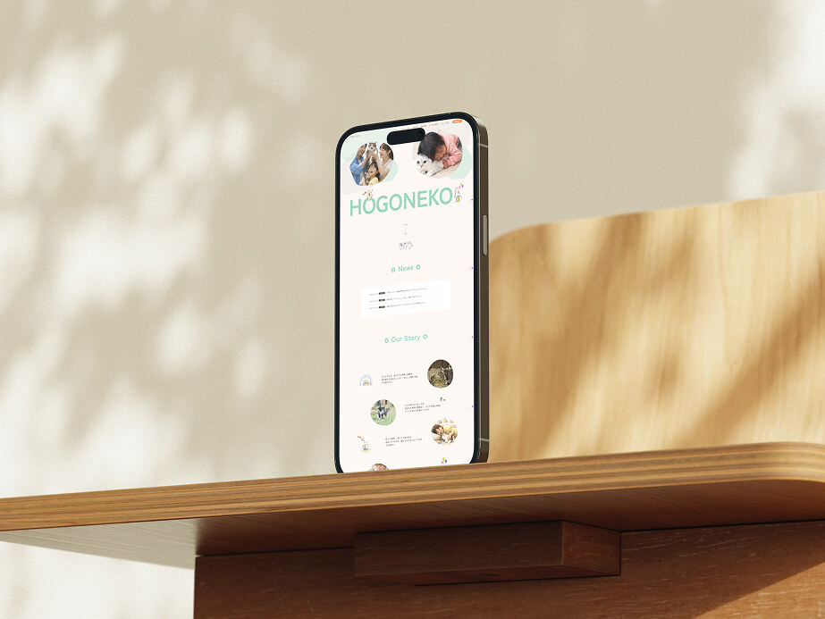
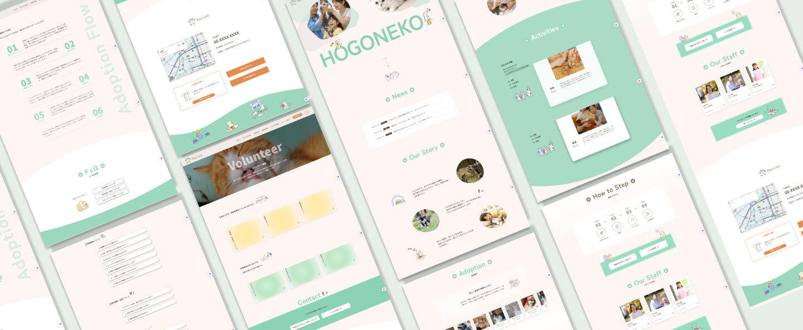

保護ネコサイト（架空）
Webサイト
やさしさや温かみを感じられる世界観を大切にしながら、保護猫施設の信頼感が伝わるWebサイトとして自主制作しました。施設の活動内容や猫たちの様子を丁寧に見せることで、「ここなら安心して迎えられそう」と感じてもらえる構成を意識しています。
ワイヤーフレーム：1週間
デザイン：1週間
コーディング：2か月
タブレット
スマートフォン
デザイン：まゆみ
コーディング：まゆみ
ライティング：まゆみ


Mockup by Mockuuups Studio
初めて保護猫を迎えたいと考えている方や、保護猫施設に安心感・信頼感を求めるファミリー層を想定しています。特に、小さなお子さまがいる家庭や、保護猫を迎える流れに不安を感じる方でも、安心して申し込みを進められるよう意識しました。
保護猫の里親募集を目的に、施設の信頼性や活動内容を分かりやすく伝え、安心して猫を迎え入れてもらうことを目的に制作しました。閲覧者が施設の雰囲気や猫たちの様子を知ることで不安を軽減し、問い合わせや里親申し込みにつながる設計を意識しています。
やさしさや温かみを感じられるよう、淡いグリーンを基調とした配色で統一しました。丸みのあるモチーフやイラストを取り入れることで親しみやすさを演出し、初めて閲覧する方にも安心感を与えるデザインを目指しています。写真とイラストをバランスよく配置することで、かわいらしさだけでなく施設としての信頼感も伝わるよう工夫しました。
里親になるまでのステップを分かりやすく整理し、ユーザーが次に取るべき行動を直感的に理解できる導線設計にしました。また、猫の情報をモーダルで確認できる仕様にすることで、一覧の見やすさを保ちながら詳細情報までスムーズに閲覧できるよう工夫しています。レスポンシブにも対応し、スマートフォンからでも快適に閲覧できるUIを意識しました。
